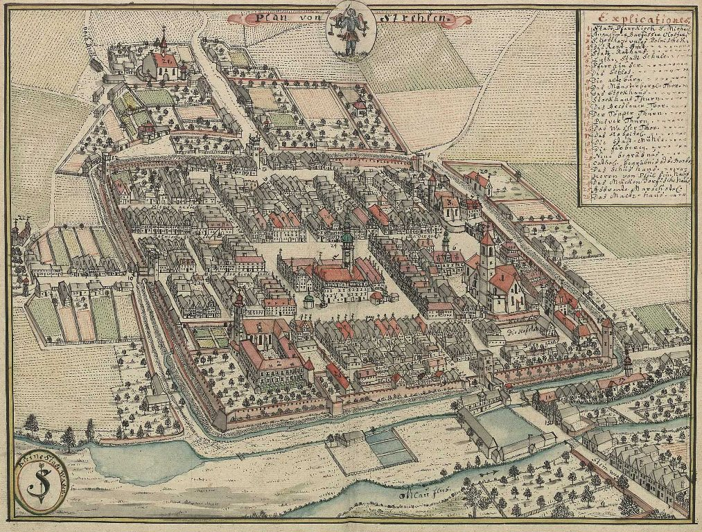
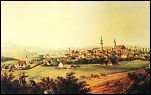
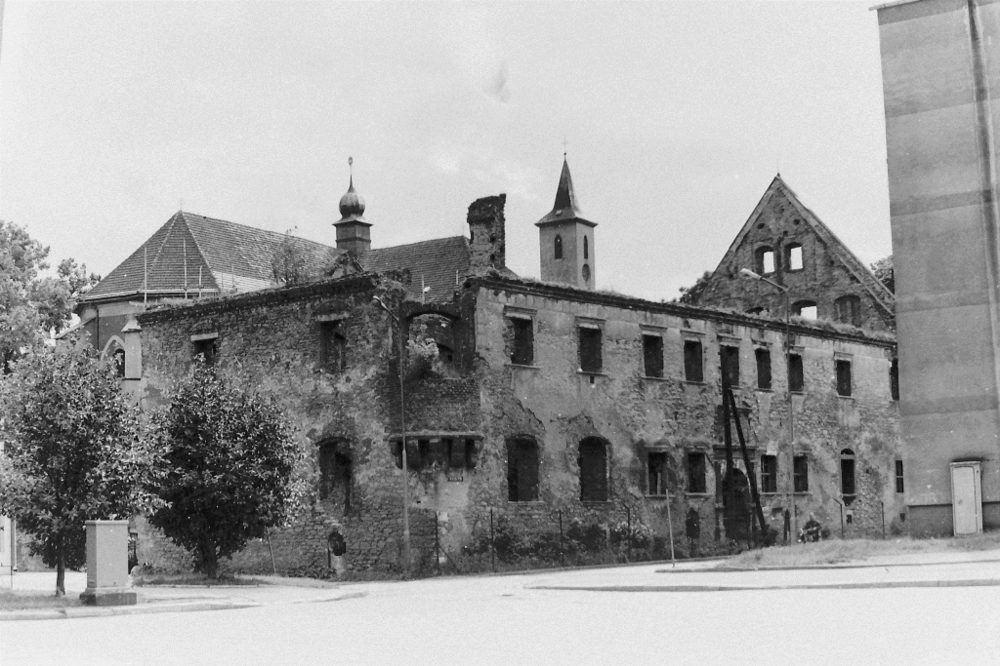
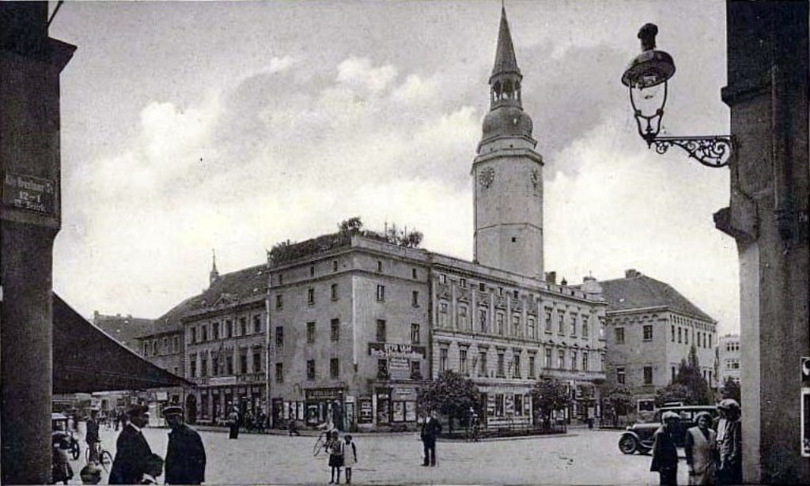
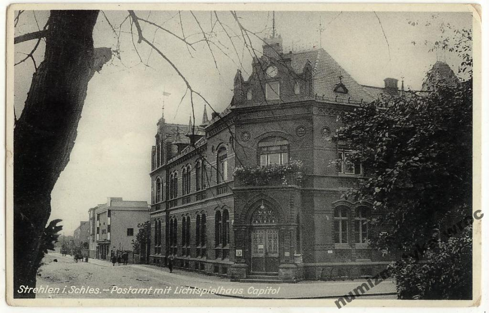

Historia Strzelina
Ju¿ w prahistorii, w czasach neolitu, tereny dzisiejszej ziemi strzeliñskiej by³y zaludnione.
Pocz±tki wspó³czesnego Strzelina siêgaj± okresu ¶redniowiecza, kiedy to na obydwu brzegach O³awy powsta³y osady targowe - na lewym brzegu Strzelin,
a na prawym Stare Przeworno. Ksi±¿ê Bolko I ¦widnicki, który odziedziczy³ te tereny po ksiêciu wroc³awskim Henryku IV Probusie,
nada³ Strzelinowi prawa miejskie, ³±cz±c obie przedlokacyjne osady w jedn± ca³o¶æ.
Sta³o siê to 30 listopada 1292 r. i wi±za³o siê z okre¶leniem przez ksiêcia, w dokumencie lokacyjnym, praw i obowi±zków mieszkañców miasta.
W dalszej kolejno¶ci zaprojektowano nowy urbanistyczny plan zabudowy i wytyczono nowe granice miasta, zamykaj±c je murami obronnymi.
Nowy w³adca Strzelina zadba³ równie¿ o jego wzbogacenie duchowe sprowadzaj±c do miasta zakon klarysek.

Dawny plan miasta
Po ¶mierci Bolka I ¦widnickiego, Strzelin wraz z okolicami znalaz³ siê w obrêbie ksiêstwa ziêbickiego pod rz±dami Bolka II,
najm³odszego syna za³o¿yciela miasta. Czasy panowania ziêbickiej linii Piastów w Strzelinie obfituj± w liczne przywileje,
jakie miasto otrzyma³o od panuj±cych - takie jak prawo wagi, urbarz piwny, prawo sk³adu i handlu sol±, a tak¿e prawo mili.
Doprowadzi³o to w krótkim czasie do szybkiego rozwoju gospodarczego miasta i regionu. Pierwsza po³owa XIV wieku to równie¿ czasy wielkich zmian politycznych.
Ksiêstwo Ziêbickie podobnie jak ca³y ¦l±sk znalaz³o siê w obrêbie Korony Czeskiej.
Bolko II Ziêbicki z³o¿y³ ho³d lenny królowi czeskiemu Janowi Luksemburczykowi w 1336 r.
K³opoty finansowe ksiêcia Bolka III Ziêbickiego w 1383 r. doprowadzi³y do sytuacji,
w której miasto zosta³o oddane w zastaw na cztery lata u ksiêcia cieszyñskiego Przemka.
Z powodu niewykupienia zastawu, Strzelin pozostawa³ we w³adaniu ksi±¿±t cieszyñsko-o¶wiêcimskich a¿ do roku 1427, kiedy to
Ludwik II w³adaj±cy ksiêstwem legnicko-brzeskim wszed³ w posiadanie miasta w drodze transakcji handlowej z Kazimierzem O¶wiêcimskim.
Nastêpne lata to burzliwe czasy wojen husyckich na ¦l±sku. Po ¶mierci Ludwika II,
Strzelin znalaz³ siê przej¶ciowo we w³adaniu rycerzy rabusiów Haina i Opitza von Czirn, a pó¼niej ich potomków.
Wykupiony ponownie zosta³ przez Fryderyka I - ksiêcia legnicko - brzeskiego w 1475 r.
Od tego momentu nasze miasto pozosta³o we w³adaniu ksi±¿±t brzeskich a¿ do ¶mierci Jerzego Wilhelma,
ostatniego ksiêcia z dynastii Piastów na ¦l±sku, w 1675 r.

Dawna Panorama Strzelina
Wiek XVI przyniós³ nowe wyzwania. Reformacja nie ominê³a Strzelina. W 1534 r. w Strzelinie wyg³oszone zosta³o pierwsze kazanie luterañskie,
a ostatnie klaryski opu¶ci³y miasto. Równie¿ w³a¶ciciele miasta, ksi±¿êta brzescy, zmienili wyznanie na ewangelickie.
Podobnie post±pi³a wiêkszo¶æ mieszkañców. W 1548 r. na Strzelin spadla klêska w postaci najwiêkszego w jego dziejach po¿aru.
Niemal¿e ca³a zabudowa miasta sp³onê³a i tylko dziêki pomocy mieszkañców ¦widnicy uda³o siê miasto odbudowaæ.
Nastêpne 70 lat to "z³oty" okres w dziejach Strzelina, czasy koniunktury gospodarczej,
rozwoju urbanistycznego i stabilizacji politycznej pod panowaniem ksi±¿±t brzeskich, w ramach monarchii Habsburgów.
Trudne czasy przysz³y do Strzelina wraz z wybuchem w Europie wojny trzydziestoletniej w 1618 r.
Miasto przez ca³y okres jej trwania by³o nara¿one na po¿ary, grabie¿e, przemarsze wojsk i inne okrucieñstwa z tym zwi±zane.
Najwiêkszym jednak nieszczê¶ciem, jakie spotka³o mieszkañców Strzelina w tym czasie, by³a zaraza,
która w 1633 r. poch³onê³a oko³o 2,5 tys. istnieñ ludzkich. Zarazê prze¿y³o - jak zanotowa³ kronikarz - zaledwie 20 rodzin.

Dom Ksi±¿±t Brzeskich po po¿arze 1945r.
Nastêpny wielki prze³om w dziejach miasta, to okres wojen ¶l±skich w XVIII wieku toczonych miêdzy Austri± a Prusami o panowanie nad ¦l±skiem.
W ich wyniku Strzelin wraz z ca³ym ¦l±skiem, od 1741 r. znalaz³ siê w granicach Królestwa Pruskiego.
W tym czasie w mie¶cie i okolicach za zgod± króla Fryderyka II Wielkiego osiedlili siê emigranci z s±siednich Czech wyznania ewangelickiego,
wzbogacaj±c kulturê mieszkaj±cych tu wcze¶niej Polaków, Niemców i ¯ydów.
W okresie wojen napoleoñskich, na pocz±tku XIX wieku, ¦l±sk ponownie sta³ siê terenem zmagañ zbrojnych.
W bezpo¶rednim s±siedztwie Strzelina w 1806 r. dosz³o do bitwy, w której wojska napoleoñskie pokona³y oddzia³ wojsk pruskich,
pod±¿aj±cych na pomoc obleganemu przez Francuzów Wroc³awiowi. W 1813 r. Strzelin sta³ siê miejscem spotkania cara Rosji Aleksandra I i króla
Prus Fryderyka Wilhelma III, organizuj±cych nastêpn± koalicjê antyfrancusk±.
Od 1815 do 1945 roku, Strzelin by³ stolic± powiatu wchodz±cego w sk³ad Rejencji Wroc³awskiej i w dalszej kolejno¶ci
Prowincji ¦l±skiej w trzystopniowym podziale administracyjnym obowi±zuj±cym w Królestwie Prus.
By³ to okres szybkiego rozwoju urbanistycznego i gospodarczego miasta. W pierwszej kolejno¶ci, po³owie XIX wieku, wyburzone zosta³y
¶redniowieczne mury obronne, krêpuj±ce przestrzenn± rozbudowê Strzelina. W ich miejsce wytyczono szerokie arterie komunikacyjne,
pocz±tkowo dla zaprzêgów konnych, a pó¼niej dla pojazdów mechanicznych. W ich s±siedztwie powstawa³y nowe osiedla mieszkaniowe.
Strzelin rozwija³ siê szczególnie w kierunku pó³nocnym i zachodnim, zw³aszcza po wybudowaniu linii kolejowej ³±cz±cej Strzelin z Wroc³awiem,
Kamieñcem Z±bkowickim i dalej z K³odzkiem oraz wzniesieniu dworca kolejowego na pocz±tku lat 70-tych XIX w.
W 1885 r. w obrêb miasta w³±czona zosta³a wie¶ Wojs³awice (obecnie ulica Brzegowa).

Rynek przed II wojn± ¶wiatow±
Wzbogaceniu uleg³a infrastruktura techniczna miasta. W 1871 r. wybudowano gazowniê, a ulice otrzyma³y o¶wietlenie gazowe.
W 1889 r. wzniesiono okaza³y budynek poczty, a dwa lata pó¼niej w³adze powiatu otrzyma³y now± siedzibê.
Najwiêksz± inwestycj± miejsk± na pocz±tku XX wieku by³a budowa wodoci±gu i kanalizacji miejskiej.
W 1918 r. do Strzelina doprowadzona zosta³a linia przesy³owa, zasilaj±ca miasto w energiê elektryczn±.
W¶ród wielu zak³adów przemys³owych najwiêksze znaczenie mia³y kamienio³omy i cukrownia.
Wielkim wydarzeniem w dziejach miasta by³o przyznanie w 1908 r. Nagrody Nobla w dziedzinie medycyny Paulowi Ehrlichowi.
Wybitny naukowiec urodzi³ siê w 1854 r. w Strzelinie i tu spêdzi³ dzieciñstwo.
Dwie wojny ¶wiatowe, przegrane przez Niemcy, zapisa³y siê w ¶wiadomo¶ci mieszkañców Strzelina jako wydarzenia,
w wyniku których wielu z nich nie wróci³o do domu z frontów. A druga wojna doprowadzi³a dodatkowo do ruiny miasta.
Przed wkroczeniem armii radzieckiej do Strzelina w marcu 1945 r., komendant obrony miasta i jego ostatni burmistrz - Kurt Eberle - wyda³ rozkaz
wysadzenia w powietrze trzech wie¿: ratusza, ko¶cio³a p.w. ¦w. Micha³a Archanio³a i ko¶cio³a p. w. Podwy¿szenia Krzy¿a ¦w.,
rozpoczynaj±c w ten sposób proces niszczenia starówki miejskiej. Po¿ary wywo³ane dzia³aniami wojennymi dokona³y dzie³a zniszczenia,
a to co pozosta³o zosta³o wyburzone ju¿ po wojnie.
W maju 1945 r. Jan Nowakowski - Pe³nomocnik Rz±du Polskiego - przej±³ w³adzê cywiln± w mie¶cie z r±k radzieckiego komendanta,
majora Pohonowicza i przyst±pi³ do organizacji polskiej administracji i przywrócenia normalnego ¿ycia mieszkañcom Strzelina.
W krótkim czasie uruchomiono wodoci±gi i przywrócono zasilanie miasta w energiê elektryczn±, rozpoczêto odbudowê zniszczonych zabudowañ,
wznowi³y produkcjê zak³ady pracy. Najwa¿niejsze z nich to kamienio³omy granitu, cukrownia i cegielnia.

Budynek poczty przed II wojn± ¶wiatow±
Zgodnie z decyzjami przywódców wielkich mocarstw koalicji antyhitlerowskiej, Dolny ¦l±sk, a wraz z nim Strzelin,
powróci³ po wiekach w granice pañstwa polskiego. Przes±dzony zosta³ równie¿ los niemieckiej ludno¶ci ziem odzyskanych,
która zosta³a przesiedlona do Niemiec. W latach 1946-47 równie¿ mieszkañcy Strzelina narodowo¶ci niemieckiej zmuszeni zostali do wyjazdu na zachód.
Pozostali tylko nieliczni niezbêdni specjali¶ci z ró¿nych dziedzin ¿ycia. Pozwolono tak¿e na pozostanie oko³o 1,5 tys.
czeskim autochtonom mieszkaj±cym w Strzelinie i okolicznych miejscowo¶ciach. W miejsce ludno¶ci wysiedlonej,
w pierwszych latach po zakoñczeniu wojny, do miasta przyby³o oko³o 7 tys. Polaków. Powojenna spo³eczno¶æ Strzelina to istna mozaika
Polaków przyby³ych z ziem zabu¿añskich, w³±czonych do Zwi±zku Radzieckiego, z tzw. Polski "centralnej", a tak¿e z Turyngii i Saksonii.
W krótkim czasie w mie¶cie zosta³o zorganizowane szkolnictwo wszystkich szczebli, s³u¿ba zdrowia, s±downictwo oraz powsta³y instytucje kultury.
Powo³ano do ¿ycia administracjê miejsk± i powiatow±, poniewa¿ Strzelin sta³ sie siedzib± starostwa powiatowego. Taki stan rzeczy trwa³ do 1975 r.
tzn. do chwili likwidacji powiatów w Polsce. Po reaktywacji powiatów w Polsce w 1999 r. Strzelin ponownie sta³ siê siedzib± Starostwa Powiatowego.
autor: Piotr Rozenek